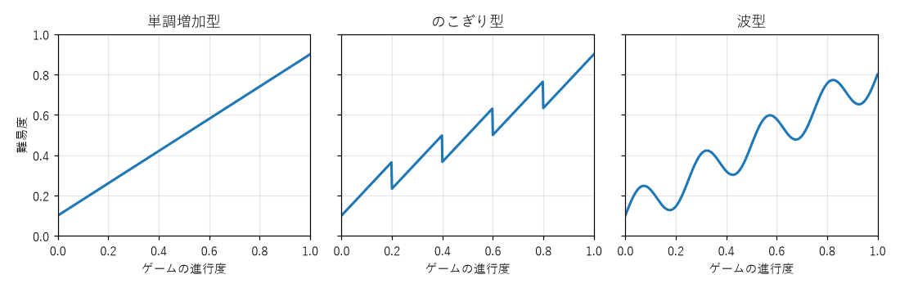

6. 難易度と学習
第 3 章のフロー理論で見たように、挑戦の難しさとプレイヤーの能力がつり合っているとき、プレイヤーは没頭しやすい。プレイヤーの能力は遊ぶにつれて上がるので、ゲームは難しさを少しずつ上げると同時に、プレイヤーの能力を上げる手助けもしなければならない。この章では、難易度の上げ方と、プレイヤーに遊び方を学んでもらう方法を扱う。
6.1. 難易度とは何か
ゲームの難易度は、課題が求める能力とプレイヤーが持っている能力の差である。同じ課題でも、初めて遊ぶ人には難しく、慣れた人には易しい。また、ゲームが求める能力には複数の種類がある。
種類 |
内容 |
例 |
|---|---|---|
操作の難しさ |
正確に、素早く入力する必要がある |
狭い足場へのジャンプ、リズムゲームの速い譜面 |
判断の難しさ |
状況を読み、よい選択をする必要がある |
将棋の次の一手、限られた資源の使い道 |
知識の難しさ |
ルールや敵の性質を知っている必要がある |
特定の敵の弱点、隠された仕組み |
時間の難しさ |
限られた時間の中で処理する必要がある |
制限時間、迫ってくる壁 |
難易度を調整するときは、どの種類の難しさを上げるのかを意識する。ゲームが重視する楽しさと関係のない種類の難しさは、プレイヤーにとって単なるストレスになる。例えば、じっくり考えるパズルゲームに厳しい制限時間を加えると、判断の楽しさよりも焦りが勝ってしまう。
6.2. 難易度曲線
ゲームの進行に沿って難易度がどう変わるかを表したグラフを、難易度曲線と呼ぶ。代表的な 3 つの型を次の図に示す。

図 6.1 難易度曲線の 3 つの型
型 |
特徴 |
注意点 |
|---|---|---|
単調増加型 |
一定の割合で難しくなる。最も単純な考え方 |
緩みが無いので、プレイヤーが疲れやすい |
のこぎり型 |
レベルの中で難しくなり、次のレベルの最初で少し易しくなる |
新しいレベルの冒頭で一息つける。下げ幅が大きすぎると退屈になる |
波型 |
山と谷を繰り返しながら、全体として難しくなる |
緊張と緩和のリズムが作れる。谷の位置と深さの設計が必要になる |
実際のゲームの難易度曲線は、のこぎり型や波型に近いものが多い。新しい要素が登場した直後は難易度を下げて慣れてもらい、慣れたところで難易度を上げる、という繰り返しが基本になる。
リスト 6.1 は、図ののこぎり型の曲線を計算する関数である。
28def sawtooth(progress: float) -> float:
29 """レベルの中では難易度が上がり、レベルが変わると上がった分の半分だけ下がる。"""
30 position = min(progress * LEVELS, LEVELS - 1e-9)
31 level = int(position)
32 within = position - level # レベル内の進行度（0〜1）
33 rise = 0.8 / (LEVELS + 1) # 1 レベルの中で上がる量
34 start = 0.1 + level * rise
35 return start + 2.0 * rise * within
難易度曲線は、デザイナーが意図を整理し、チームで共有するための道具である。実際にプレイヤーが感じる難しさは、プレイテストで確かめる必要がある。プレイヤーがどこで何回失敗したかを記録すれば、実際に難しいと感じられている場所が分かる。失敗の多い場所を可視化する方法は第 11 章で扱う。
6.3. 学習を設計する
難易度を上げるには、プレイヤーが上達していることが前提になる。ゲームは、遊び方をプレイヤーに教える仕組みを持たなければならない。
6.3.1. 新しい要素を 1 つずつ教える
人が一度に覚えられることには限りがある。新しい操作、敵、仕掛けは、一度に 1 つずつ登場させるのが原則である。新しい要素が 2 つ同時に登場すると、失敗したときにどちらが原因なのかが分からなくなる。
新しい要素は、次のような段階を踏んで見せるとよい。第 9 章では、この 4 つの段階を導入、練習、応用、結びと呼び、レベルの構成方法として詳しく扱う。
失敗しても損害の小さい安全な場所で、新しい要素に出会わせる。
新しい要素だけに集中できる場面で練習させる。
既に知っている要素と組み合わせたり、意外な使い方を見せたりして、理解を深めさせる。
学んだことを確かめさせ、達成感とともに区切りを付ける。
6.3.2. 説明するより体験させる
遊び方を教える方法には、文章で説明する方法から、レベルの構造で自然に気付かせる方法まで、さまざまなものがある。
方法 |
内容 |
長所と短所 |
|---|---|---|
文章や画像で説明する |
操作方法やルールを画面に表示する |
確実に伝わるが、読み飛ばされやすく、遊びが中断する |
指示に従わせる |
「ジャンプボタンを押せ」のように、指示どおりに操作させる |
操作は確実に覚えるが、やらされている感じが強い |
レベルの構造で気付かせる |
進むためには新しい操作を使うしかない場所を用意する |
自分で気付いた喜びがあるが、設計に手間がかかり、気付かない人への備えも必要になる |
自分で気付いたことは記憶に残りやすく、第 3 章で述べた自律性や有能感も満たす。レベルの構造で気付かせる方法を基本にし、気付かないプレイヤーのために、しばらく進めない場合にだけヒントを表示するなどの補助を用意するのがよい。
6.4. 失敗を設計する
挑戦のあるゲームでは、プレイヤーは何度も失敗する。失敗したときの体験は、成功したときの体験と同じくらい重要である。
6.4.1. 公平だと感じさせる
プレイヤーが失敗を受け入れられるのは、失敗が公平だと感じられるときである。公平だと感じさせるには、次の点が重要になる。
失敗の原因が分かる。何に当たったのか、なぜ間に合わなかったのかが見て分かる。
危険が事前に予告されている。敵の攻撃には予備動作があり、落とし穴には見た目の手がかりがある。
次はどうすればよいかが想像できる。原因が分かれば、プレイヤーは「次こそは」と思える。
画面の外から突然現れた敵に倒されたり、当たっていないように見える攻撃で倒されたりすると、プレイヤーは自分の腕ではなくゲームのせいだと感じる。
6.4.2. ペナルティの重さ
失敗したときに失うものの大きさ（ペナルティ）は、ゲームの緊張感と遊びやすさの両方を左右する。
ペナルティ |
効果 |
向いているゲーム |
|---|---|---|
その場からすぐやり直せる |
試行錯誤しやすい。1 回の失敗の重みは軽い |
難しい操作を何度も試すアクションゲーム、パズルゲーム |
チェックポイントまで戻る |
区間ごとの緊張感が生まれる。戻る距離で重さを調整できる |
多くのアクションゲーム |
所持品や経験値の一部を失う |
慎重な行動を促す。取り戻す機会を用意することもある |
RPG、探索型のアクションゲーム |
最初からやり直す |
1 回 1 回の挑戦が重くなり、強い緊張感が生まれる |
ローグライク、短時間で 1 回が終わるゲーム |
ペナルティを決めるときは、やり直すまでにかかる時間にも注意する。失敗するたびに長い演出を見せられたり、同じ易しい区間を何度も通らされたりすると、プレイヤーは挑戦する意欲を失う。難しい場所ほど、やり直しを速くするのが基本である。
6.5. 動的難易度調整
プレイヤーの成績に応じて、ゲームが自動的に難易度を変える仕組みを、動的難易度調整と呼ぶ。何度も失敗しているプレイヤーには敵を弱くし、順調なプレイヤーには敵を強くする、といった調整を行う。
方法 |
内容 |
|---|---|
失敗の回数に応じて補助を出す |
同じ場所で何度も失敗したら、無敵になるアイテムや追加のチェックポイントを用意する |
成績に応じて敵の強さを変える |
被ダメージや命中率を記録し、敵の数や攻撃力を内部で増減させる |
順位に応じて手助けする |
レースゲームで、後ろを走るプレイヤーほど強いアイテムを出す（第 4 章の負のフィードバック） |
動的難易度調整は、幅広い腕前のプレイヤーをフローチャンネルにとどめるのに役立つ。一方で、次のような問題も起こりうる。
調整に気付いたプレイヤーが、手加減されていると感じて達成感を失う。
わざと失敗して難易度を下げる、という攻略法が生まれる。
上達しても難しさが変わらないように感じ、成長の手応えが薄れる。
そのため、調整はプレイヤーに気付かれない範囲で緩やかに行うか、逆に「補助を使うかどうか」をプレイヤー自身に選ばせることが多い。
6.6. 難易度の選択とアクセシビリティ
プレイヤーの腕前や事情はさまざまなので、1 つの難易度ですべての人を満足させることはできない。多くのゲームでは、最初に難易度（易しい、普通、難しいなど）を選ばせる。
難易度の選択肢を作るときは、名前の付け方にも気を配る。「易しい」を選ぶことに抵抗を感じるプレイヤーもいるので、「物語を楽しむ」「歯ごたえを楽しむ」のように、何を楽しみたいかで選べる名前にする方法もある。
6.6.1. アクセシビリティ
アクセシビリティとは、障害の有無や身体的な条件にかかわらず、多くの人が遊べるようにすることである。難易度の調整と並んで、次のような配慮が一般的になっている。
分野 |
配慮の例 |
|---|---|
視覚 |
文字の大きさを変えられる。色だけで情報を区別しない（形や模様も使う）。色覚の特性に合わせた配色を選べる |
聴覚 |
台詞に字幕を付ける。重要な効果音（背後からの足音など）を画面上の表示でも伝える |
運動 |
ボタンの割り当てを変えられる。連打や長押しを、1 回の押下や切り替えに変えられる |
認知 |
目的や操作方法をいつでも確認できる。ゲームの速度を遅くできる |
アクション性の高いゲームでも、ゲームの速度を下げる、無敵にするなどの補助を選べるようにした例がある。2018 年に発売された「Celeste」は、難しいアクションゲームでありながら、ゲームの速度や無敵の有無などを個別に設定できる「アシストモード」を備えたことで知られる。
アクセシビリティの指針としては、ゲーム開発者や研究者がまとめた Game accessibility guidelines が参考になる。
6.7. 演習
好きなゲームを 1 つ選び、そのゲームが求める難しさの種類（操作、判断、知識、時間）を、重要な順に並べよ。
遊んだことのあるゲームで、新しい要素の教え方が上手だと感じた場面と、下手だと感じた場面を 1 つずつ挙げ、理由を説明せよ。
difficulty_curve.pyに、序盤だけ急に難しくなり、その後は緩やかになる難易度曲線を追加して表示せよ。そのような曲線を持つゲームでは、プレイヤーにどのような体験が生じるかを考えよ。自分の作りたいゲームについて、失敗したときのペナルティを決め、その理由を説明せよ。